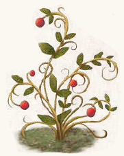

Quinja-Beeren sind knallrot und dienen als Stärkungsmittel. Die Beeren wachsen bevorzugt in Südaventurien, vor allem an warmen schattigen Orten im Regenwald.

Suchschwierigkeit: -3
Bestimmungsschwierigkeit: -2
Anwendungen: 3/3/4/4/5/5
Wirkung:
Roh:
Berührung: keine
Einatmung: keine
Verzehr: Eine Quinja-Beere erhöht die Körperkraft des Anwenders für 2 Stunden um 1 Punkt.
Eine Einnahme mehrerer Beeren gleichzeitig hat keine weitere Auswirkung.
Ein Sud aus Quinja, Sansaro und Donf verhindert einen Ausbruch des Jahresiebers für fünf Monate nach Einnahme.
Verarbeitet: noch keine Rezepte bekannt
Preis: 6 / 6,5 Silbertaler
Rezepte:
noch keine bekannt
Haltbarkeit:
Roh: siehe Haltbarmachung